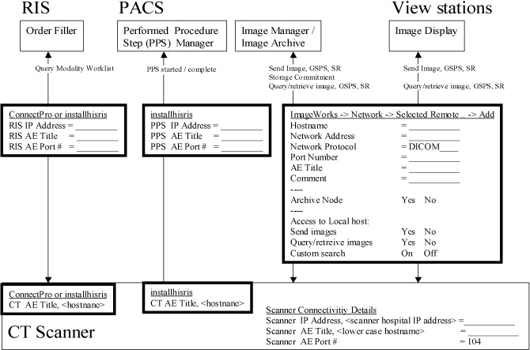

Operating Documentation
Direction 5167277-800, Rev# 8
5167277-800 - FX/Xtream SW & Upgrade Procedures
Operating Documentation |
| Last Revised on: | 14 April, 2005 |
This module contains the following sections:
Section 1 - Scope
Section 2 - Prerequisites
Section 3 - Installation/Configuration
Section 4 - Troubleshooting/Checks
The installation of Virtual Exam Split (VES) or Hard Exam Split (HES) requires a preliminary visit with the customer to acquire appropriate network configuration information as well as insuring that all system prerequisites are installed.
There are both Pre-Sales prerequisites and Systems prerequisites that need to be determined before the Exam Split options can be installed.
If installing on an ALI/McKesson PACS with version Horizon Medical Imaging (HMI) 4.6.1 or later, then the Exam Split option will be installed as “Virtual.” Otherwise, the Exam Split option will be installed as “Hard.”
Integrating the Healthcare Enterprise (IHE) defines profiles showing how various hospital equipment interact to accomplish a hospital goal. The Virtual Exam Split scanner feature is a scanner feature that ONLY works when the Hospital RIS & PACS also support the capabilities required. For Exam Split to work, the RIS and PACS equipment in the hospital need to support:
IHE Scheduled Workflow profile
IHE Presentation of Grouped Procedures (PGP) profile (required for Virtual Exam Split)
Contact the Customer or sales representative and insure that these options are supported by the Hospital RIS or PACS.
If the Hospital RIS, PACS or viewing station does not support the above capabilities, contact the sales representative to work with your customer to get them installed prior to installing VES. Another option is to install Exam Split, and configure it as “Hard” Exam Split.
IHE profiles rely on DICOM objects/capabilities. For Exam Split, support for the following objects is mandatory.
RIS - Modality Worklist (as outlined in chapter 6 of the LightSpeed DICOM conformance document)
PACS - Performed Procedure Step (PPS) (as outlined in chapter 7 of the Lightspeed DICOM conformance document) and Grayscale Softcopy Presentation State (GSPS) (as outlined in chapter 8 of the Lightspeed DICOM conformance document)
Viewing stations - Grayscale Softcopy Presentation State (GSPS)
Working with the Hospital's IT specialist, complete the following Connectivity Worksheet.
Illustration 1: Worksheet - Scanner Connectivity to Hospital

| NOTE: | For a printable version of the above worksheet, click on the following
PDF icon: |
Install the options using the following commands:
ConnectPro - installs option & configures RIS MWL information
installhisris - configures RIS MWL and PACS PPS information
changesplit_mode VES - configures exam split feature for "Virtual" exam split
- OR -
changesplit_mode HES - configures exam split feature for "Hard" exam split
To configure/enter the data capture in Illustration 1:
Image Works.
Select [Network] .
Select [Selected Remote] .
Select [Add] .
Once the scanner installation/configuration has been completed and the hospital RIS, PACS and workstations have been configured to the CT scanner, check basic DICOM connectivity by sending DICOM PING/ECHO from ImageWorks Network to the RIS & PACS. This needs to work before anything else has a chance.
A more elaborate Exam Split test requires:
Setup multiple accession numbers (requested procedures) for the same Patient on the RIS
Query the modality Worklist from the CT Scanner
- New items should be seen
Make sure that "AutoStore" is on and point to the PACS
Select the multiple requests from the Worklist & perform the exam
End the exam
- Images should be sent to the PACS
Complete the PPS (on popup)
Select the new exam in the ImageWorks browser
Start Exam Split from the ImageWorks desktop
- Exam split starts & shows multiple accession numbers
Within Exam Split:
Select [Accession Number Procedure] from Exam Split Application screen.
Select a range of images for the 1st accession number.
Click on [Host Config] button on left side of Exam Split Application, and select a destination.
Send the split images.
Repeat these steps for each accession number in the exam.